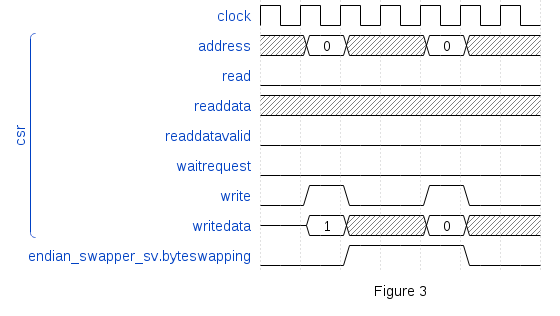

Beautiful Documentation
Posted by Chris Higgs in Blog
Inspiration
Creating good documentation is an artform, one of those under-appreciated skills that we barely notice if done well. Bad, out-of-date or incomplete documentation on the other hand is exceedingly frustrating.
In the software world, the idea of excecutable or generated documentation has been around for a long time - Python has the Doctest module for this purpose. Doxygen has become the de-facto standard producing documentation from comments. What if we want to apply similar concepts to RTL development?
A well packaged piece of reusable RTL should include at the bare minimum some documentation and it's generally expected that some form of simple testbench will be provided to demonstrate how to drive the interfaces for the basic functionality.
Wavedrom
We want to make it easier to create beautiful documentation for RTL. One project I've been using for some time now is Wavedrom, a tool that converts JSON descriptions to a rendered SVG waveform diagram. The input format is concise and the resulting graphics are clear and neat, so this is the perfect project to use for our documentation.
Cocotb
We could simply hand-write wavedrom samples in JSON and include them in our documentation (in fact I once wrote a Markdown extension for this purpose), but being lazy engineers there must be a smarter way to create waveform diagrams for our documentation.
With a fairly trivial amount of effort, it's possible to generate some documenation from a simulation test. A trace feature has been added to Cocotb for this purpose, allowing us to create Wavedrom diagrams very quickly.
Typically we don't want to trace signals for an entire simulation (the simulator can do that more efficiently that we can), instead we want to capture small sections of functionality and save them as a diagram. Python has an excellent idiom for this style of programming - the context manager.
Using the Trace context manager, we could write the following code:
csr = AvalonMaster(dut, "csr", dut.clk)
with trace(csr.bus, dut.byteswapping, clk=dut.clk) as waves:
yield RisingEdge(dut.clk)
yield csr.write(0, 1)
yield RisingEdge(dut.clk)
yield csr.write(0, 0)
yield RisingEdge(dut.clk)
yield RisingEdge(dut.clk)
waves.write("figure3.json", footer="Figure 3")
This will write the following JSON to a file:
{ "foot": {
"text": "Figure 3"
},
"signal": [{
"name": "clock",
"wave": "p......"
},
["csr", {"data": "0 0",
"name": "address",
"wave": "x=xx=xx"
},
{ "name": "read",
"wave": "0......"
},
{ "name": "readdata",
"wave": "xxxxxxx"
},
{ "name": "readdatavalid",
"wave": "0......"
},
{ "name": "waitrequest",
"wave": "0......"
},
{ "name": "write",
"wave": "010.10."
},
{ "data": "1 0",
"name": "writedata",
"wave": "z=xx=xx"
}],
{ "name": "endian_swapper_sv.byteswapping",
"wave": "0.1..0."
}]}
We can then use the Wavedrom command line interface to convert this to a diagram that we can include in the documentation:
As we can see, it's easy to create beautiful waveform diagrams from within a Cocotb simulation. This allows us to write simple tutorial simulations that demonstrate how the interfaces to our RTL should be driven, and enable us to generate sections of documentation conveniently.
In a future post, we'll look at combining multiple sources of data together including waveform diagrams generated in Cocotb into a datasheet for an RTL component.